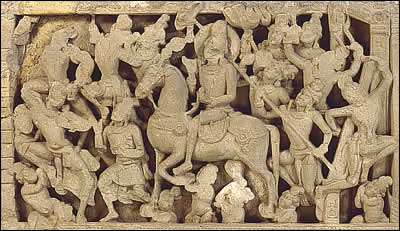

The Great Departure
Once Siddhartha had seen suffering in the world outside the palace walls, he vowed to leave the palace to seek a greater understanding of the world. One night, he crept out of the palace leaving behind his wife, his son and all worldly possessions except for his horse. In this scene, Siddhartha is leaving the palace on horseback. The horse is held up by dwarves or ganas so that the sound of its hooves do not wake anyone in the palace. |